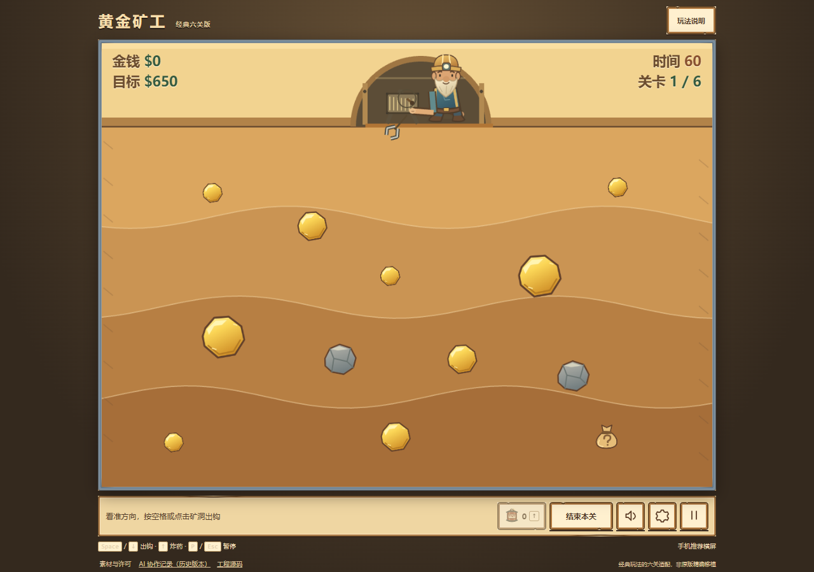
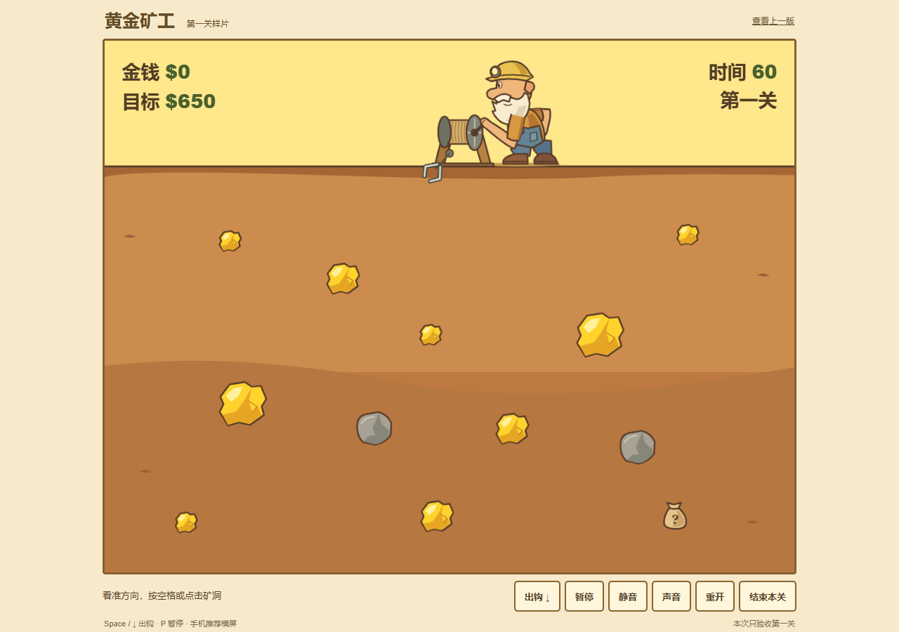

第一关：画面与正常速度演示
先看摇柄、接触、重石等待和收钱声音。技术检查不能替你判断手感。
上一版1.3
本次第一关样片
两张画面使用相同1280×900浏览器视口，完整显示，没有移动角色或改写状态制作对照。
查看被否定的生成帧图样片（历史）

7秒人物近景：落柄放绳、握柄回收（原速放大、无声）
10秒动作摘录（原速、无声循环）
约30秒带声演示
真实按键、正常时钟、只读状态辅助瞄准，未剪辑加速；不代表人类通过率。新会话关内音乐默认关闭，已有偏好沿用。本轮已实际参照经典版，取消独立拨杆和上挥动作，改为下落放绳、回收摇柄；减少动态环境也保留回收动作。尚待主观验收。